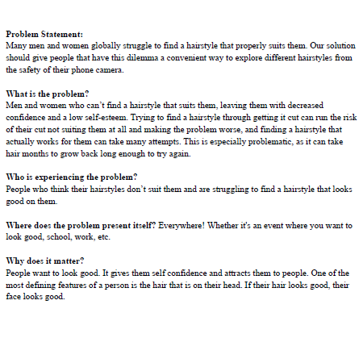
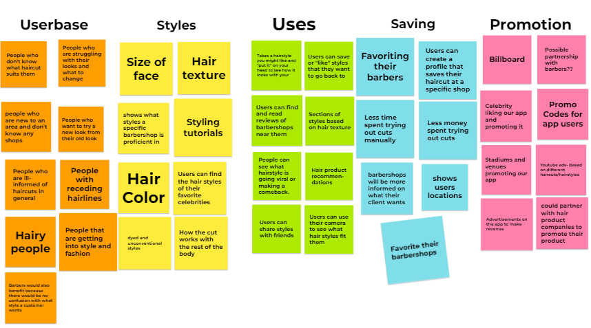
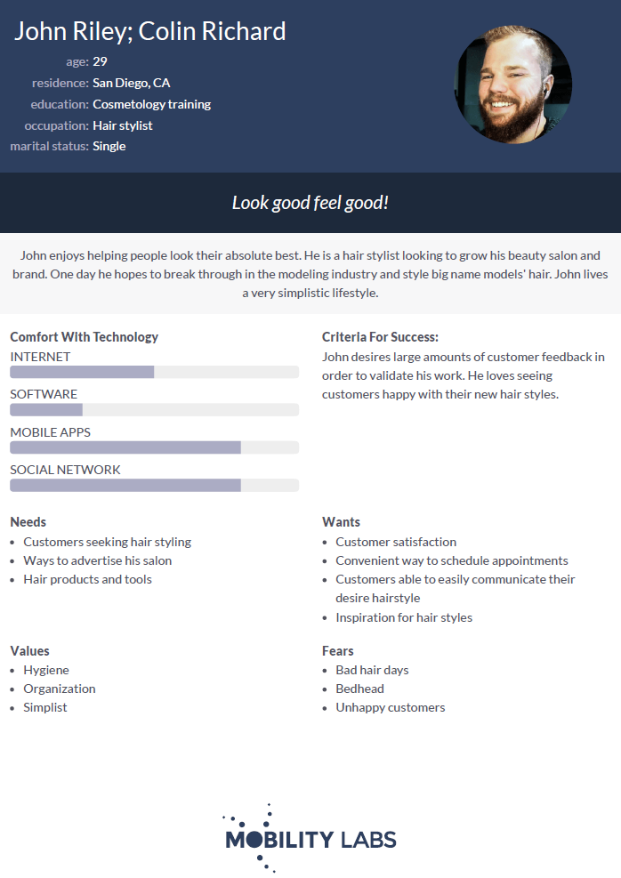
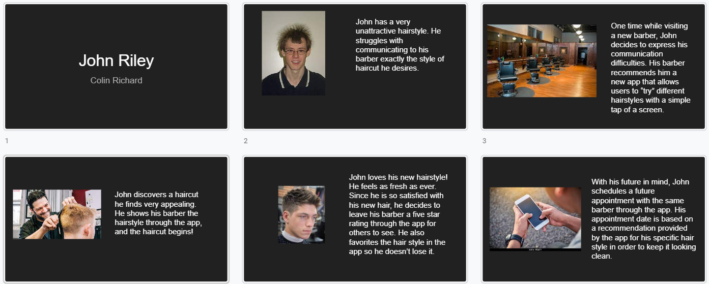

Problem Statement: Hair cut
Many men and women globally struggle to find a hairstyle that properly suits them. Our solution should give people that have this dilemma a convenient way to explore different hairstyles.
Affinity Diagram: Hair Cut
My group and I cooperated to brainstorm the different elements of hair styles.
Persona: John Riley
Personas of typical hair cut enthusiast.
Storyboard for hair cut
Visual representation of someone seeking an attractive haircut
Sketches

Rough ideas for application apperance.
Paper Prototype

A paper tutorial of the potential appearance of every screen in the application.
Hi-Fi Prototype: Haircut App

A high fidelity prototype demonstrating how our haircut app would run.